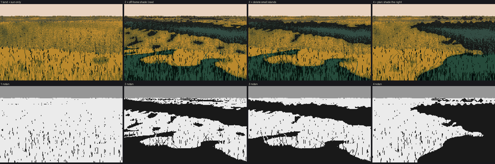
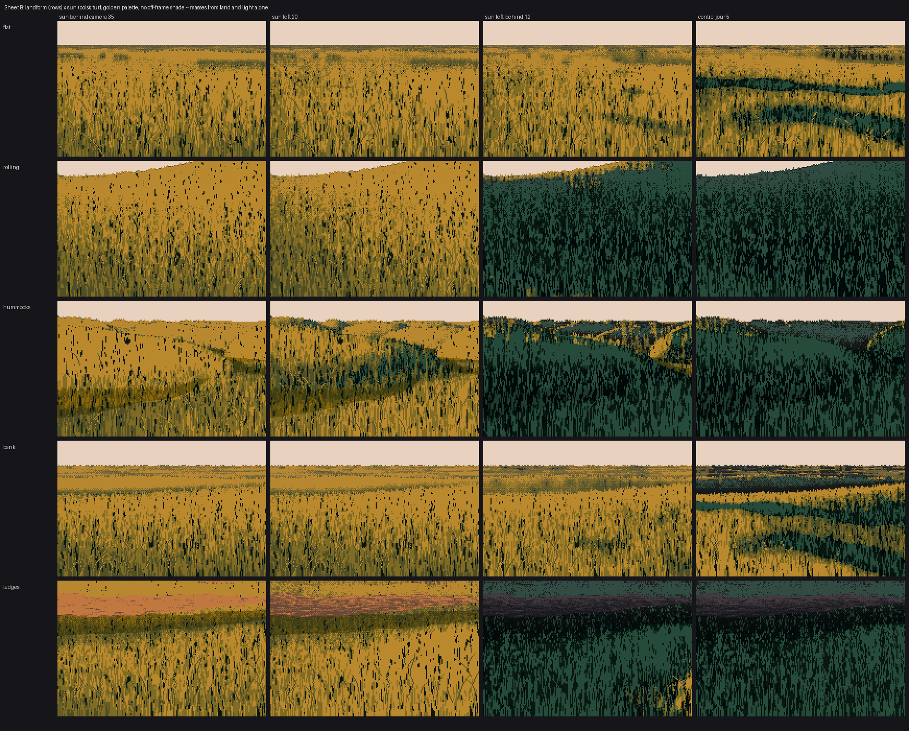
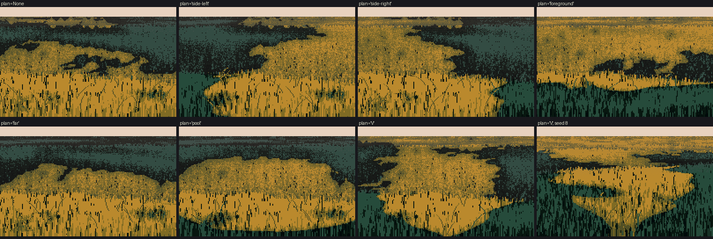

Lesson 2: Design the masses
Back to the course. Previous: Read the masses.
The goal of this lesson is a two-value notan that looks designed: two to four big lit and shadow shapes, each with a reason for being there. Everything is in code/ground.py, in the functions light, canopy_field, design_masses, plan_bias and value_plan.

t_masses_steps. The meadow bank (landform='bank', hour='golden', sun=(25, 10), ppm=30, pitch=10), built one step at a time, with the notan under each. Made by figs.py masses.
Step 0: a world that knows where every pixel is
The masses have to come from something, so the painter renders a small world first. It's an analytic height field h(x, z) in metres, built from a few big features:
- swells biased to run across the view, so they stack into terraces as in V13;
- optionally hummocks, a bank falling to a shore, terraced ledges, or a winding path.
A column ray-march gives every pixel its world x, z, height, normal and, most usefully, pixels per metre. Every mark size later is set from that.
buf = render(land, W, H, ppm=30, pitch=10, cam_h=1.7)
buf['x'], buf['z'], buf['h'], buf['n'], buf['ppm'], buf['sky']
One bug worth knowing about before you start: stand the camera on the ground under it, not at height zero. My seed-1 frame was half a wall of dark grass with a vertical edge, because the land rose in front of a camera 1.7 m above sea level. Printing one row of buf['z'] gave a flat 2.0 m across the whole frame, which gave it away.
base = max(land.h(0, q, micro=False) for q in np.linspace(0, 4, 9)) # highest ground in the first 4 m
y = h - cam_h - base
Step 1: land and sun
Ferrari's light has a direction, but his grass doesn't shade like a plaster model. Grass is a forest of vertical blades, and it catches a low sun on any slope. So the painter gives each material a normal response: how much its value follows N·L.
NRESP = {'turf': 0.6, 'meadow': 0.5, 'earth': 1.0, 'gravel': 0.8, 'forest': 0.6, 'moss': 0.5}
r = L['ndl'] * L['sunvis'] / sy # 1 = a flat plane in full sun
r = 1 + k * (np.minimum(r, 3) - 1) # k = NRESP of this pixel's material
Without this, my lit bank measured a mean value below the terminator (2.3 on a 0–6 scale, with 70% of it technically lit), because the land faced slightly away from a low sun. Bare earth, sand and snow take the full N·L, which is what gives V25's dunes their big lit and dark faces.
The land shades itself with a horizon march toward the sun:
for t in [0.5, 1, 2, 3.5, 5.5, 8, 12, 18, 26, 38, 55, 80]: # metres toward the sun
hs = land.h(X + s[0] / hor * t, Z + s[2] / hor * t, micro=False)
vis = np.minimum(vis, np.clip(0.5 - (hs - (Hh + tan_el * t)) / (0.08 + 0.02 * t), 0, 1))
Panel 1 of the strip shows what land and sun alone give on gentle ground: one lit field. That's physically right and pictorially empty. Sheet B shows where land and sun alone are enough: hummocks and banks under a low or back light.


Sheet B: landform (rows) × sun direction (columns), with no off-frame shade. The hummocks and contre-jour cells are the first studio grounds with masses from land and light. The front-lit columns have none.
Step 2: the shadows of things you can't see
Ferrari's biggest ground masses are cast by things outside the frame. The whole right bank of V16 is in shadow from forest you never see. The painter models this as a soft union of crown shadows: blobs scattered in world space, each stretched along the sun's azimuth (longer when the sun is low). It then thresholds that at the quantile that puts a fraction shade of the ground in shadow.
a = (dx * ux + dz * uz) / (rr * stretch) # along the sun's horizontal direction
b = (-dx * uz + dz * ux) / rr
acc = acc + np.exp(-(a * a + b * b) * 1.5)
# a ragged, world-anchored edge: octaves of sinusoids from crown to leaf scale
for k, wl in enumerate([scale * 1.2, scale * 0.55, scale * 0.25, scale * 0.12]):
... acc += amp * 0.25 * 0.7 ** k * np.sin(...)
thr = np.quantile(acc, 1 - cover)
return 1 - 1 / (1 + np.exp(-(acc - thr) / (0.03 * amp)))
shade_scale is the size of a caster in metres: 3–5 for trees near the subject, 10–16 for forest and cloud. The edge octaves matter. Without them every shadow is a smooth ellipse, which reads as a hole cut in the ground.
Panel 2 is the raw result: the right idea, full of holes.

046. From the study: every small shadow reads as a hole. This is speckle at a larger scale.
Step 3: delete the small shapes
This one function did more against "speckle" than anything else I wrote. Label the shadow regions and the lit regions, and absorb anything smaller than a fraction of the frame:
def design_masses(f, min_frac=0.02):
f = f.copy(); a = f.size * min_frac
for val in (True, False): # shadow islands, then lit holes
m = f < 0.5
lab, n = ndi.label(m == val)
sizes = ndi.sum(np.ones_like(f), lab, range(1, n + 1))
edge = np.unique(np.concatenate([lab[0], lab[-1], lab[:, 0], lab[:, -1]]))
floating = ~np.isin(np.arange(1, n + 1), edge)
lim = np.where(floating & val, a * 3.5, a) # a floating shadow must be much bigger
small = np.isin(lab, np.nonzero(sizes < lim)[0] + 1)
grow = ndi.binary_dilation(small, iterations=4)
if val: f[grow & (f < 0.999)] = 1.0 # the island goes, and takes its penumbra
else: f[grow & (f > 0.001)] = 0.0
return f
light() calls it on the product of terrain shadow and off-frame shade, with min_frac=0.03. Small canopy dapple (canopy) is multiplied in afterwards, because dapple is supposed to be small.
The three details all came from failures:
- Dilate before absorbing. Without the dilation, each deleted island leaves its soft penumbra behind as a dithered ring.

081. Debug view, value panel second from left: rings where islands used to be.
- Floating shadows need a higher bar. A shadow touching the frame edge reads as cast by something out of shot. One floating in the middle reads as a hole unless it's big.
- Lit holes too. A small lit hole in a shadow is the same problem in reverse.
Step 4: compose with a plan
Physics decides whether shadows exist. The picture decides where they go. plan adds a screen-space bias to the off-frame shade field before thresholding, so you get shadow where the composition wants it:
b = {'side-left': -u * 2, 'side-right': u * 2, 'foreground': (tg - 0.6) * 2.5,
'far': (0.35 - tg) * 2.5,
'pool': (np.hypot(u * 1.6, (tg - 0.5) * 2.2) - 0.45) * 2.5,
'V': np.abs(u) * 2 + (tg - 0.8) * 1.5 - 0.3}[plan]
acc = acc + b * amp * 2.5

t_plans. The same bank under each plan.
side-rightorside-leftis V16: one lit bank, one shaded bank.foregroundis a repoussoir: dark near ground framing a lit middle distance.farputs a lit foreground under dark distance.poolandVshow their construction: they read as stamped ovals. Use them only with a bigshade_scaleand a lowshade. They're the weakest of the plans.
The bias moves the shadows but keeps their shapes from the world, so the edges still come from casters. A plan is a hint to the physics, not a stencil.
Step 5: two families that never touch
Once the lit mask is known, every value is placed in one of two families: shadow steps 0–2, light steps 3–5. They're clamped apart before the marks and again after quantization. Otherwise the ordered dither will happily mix a lit step into a shadow, and the notan goes grey:
v = np.where(lit, np.maximum(v, 3.0), np.minimum(v, 2.9)) # before marks
...
step = np.where(lit, np.maximum(step, 3), np.minimum(step, 2)) # after quantizing
The terminator itself is broken by the material, so it's never a cut-paper curve. On turf, tall narrow noise lets blade tips cross the edge; on earth, small round grains do:
nt = ndi.gaussian_filter(rng.normal(size=(H, W)), (4, 0.7)) # tall and thin: blade tips
ne = ndi.gaussian_filter(rng.normal(size=(H, W)), (1.3, 1.3)) # round: grains
en = np.where(grass, 0.12 * nt, 0.08 * ne) + 0.04 * rng.normal(size=(H, W))
sv = L['sunvis'] + en * (L['sunvis'] * (1 - L['sunvis']) * 4 + 0.05) # strongest in the penumbra
lit = (sv > 0.5) & (L['ndl'] + en * sy * 1.5 > lit_floor * sy)
Keep it gentle. My first version was three times stronger and dissolved every edge into leopard spots:

062. Too much terminator noise.
The noise also leaves one- and two-pixel specks of the wrong family. They're invisible here, but they break the next lesson's distance transforms. See lesson 3.
The check
Render the notan (step >= 3) and look at it before anything else. It should have:
- two to four shapes, each touching the frame or clearly cast by something;
- long gentle edges on the caster side, with a fringe;
- no holes and no leopard skin.
If it passes, the painting will hold. If it fails, no texture will rescue it.
Two faults the critic found in my notans, both worth checking yours for:
- Coastlines. An off-frame shadow edge should be one or two long, gently curving lines, not a jagged coastline. My driftwood sheet's shade had coastlines.
- Masses with no reason. Every shadow should have a caster you could point to, even off-frame.